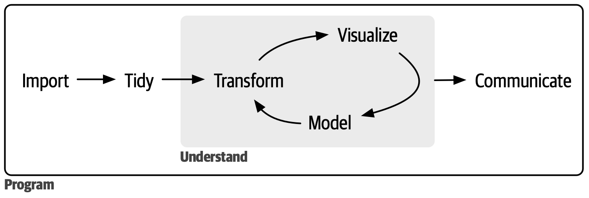
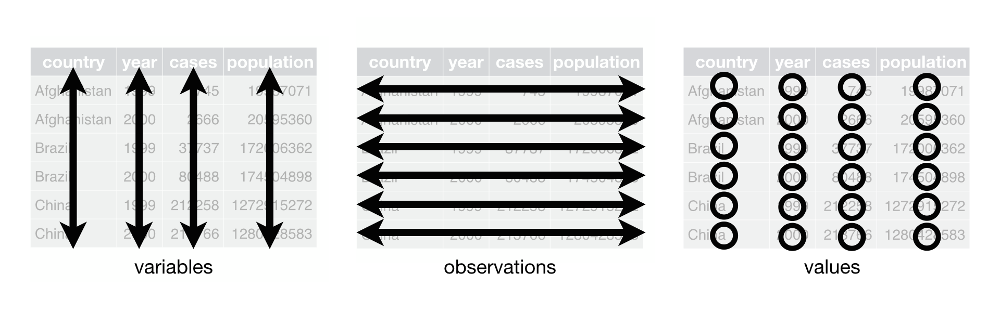
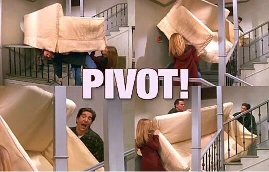
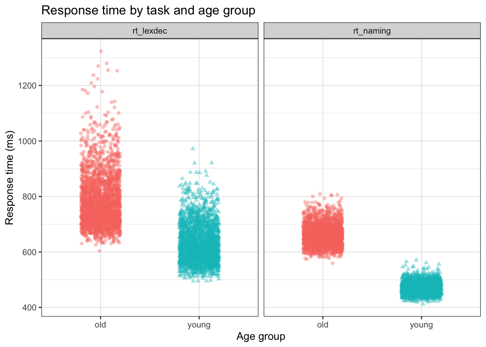
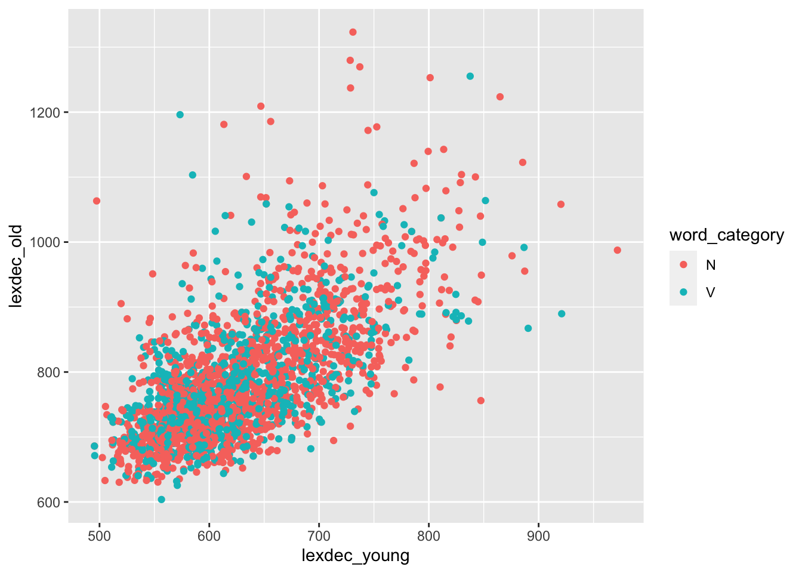

9 Data Wrangling 2
Datenbereinigung (Data tidying)
Lernziele
In diesem Kapitel werden wir lernen…
- über breite versus lange Daten
- wie man breite Daten länger machen kann
- wie man lange Daten breiter macht
Lesungen
Die Pflichtlektüre zur Vorbereitung auf dieses Thema ist Kapital 6 (Data tidying) in Wickham et al. (2023).
Eine ergänzende Lektüre ist Kapital 8 (Data tidying) in Nordmann & DeBruine (2022).
9.1 Wiederholung
Im letzten Kapitel haben wir etwas über deskriptive Statistik gelernt, insbesondere über Maße der zentralen Tendenz (Mittelwert, Median, Modus) und der Streuung (Bereich, Standardabweichung). Wir haben auch gesehen, wie man diese Werte mit Base R (z. B. mean(), sd()) und der tidyverse (z. B. summarise()) und nach Gruppen (summarise(.by = )) berechnet.
In diesem Kapitel werden wir das Konzept der aufgeräumten Daten besprechen und sehen, wie wir unsere Daten organisieren und neu anordnen können, damit sie aufgeräumt sind.
9.2 Einrichtung
Wir brauchen die Pakete tidyverse, here, und janitor.
We’ll use the languageR_english.csv dataset (in daten folder).
9.3 ‘Tidy’ Arbeitsablauf
Abbildung 9.1 zeigt einen Überblick über den typischen Data-Science-Prozess, bei dem wir unsere Daten importieren, sie bereinigen und dann einen Zyklus von Umwandlung, Visualisierung und Modellierung durchlaufen, bevor wir schließlich unsere Ergebnisse mitteilen.
Wir haben bereits gesehen, wie wir unsere Daten importieren (readr::read_csv), transformieren (Paket dplyr) und visualisieren (Paket ggplot) können. Aber wir haben bisher nur aufgeräumte Daten gesehen, so dass wir den Schritt “aufräumen” nicht durchführen mussten.
9.4 ‘Tidy’ Daten
Dieselben Daten können auf verschiedene Weise dargestellt werden. Die folgenden Datensätze zeigen alle dieselben Werte für vier Variablen: Land, Jahr, Bevölkerungszahl und Anzahl der Tuberkulosefälle. Jeder Datensatz ordnet die Werte anders an. Nehmen Sie sich einen Moment Zeit, um die verschiedenen Optionen zu betrachten. Welche ist am einfachsten zu lesen?
| country | year | cases | population |
|---|---|---|---|
| Afghanistan | 1999 | 745 | 19987071 |
| Afghanistan | 2000 | 2666 | 20595360 |
| Brazil | 1999 | 37737 | 172006362 |
| Brazil | 2000 | 80488 | 174504898 |
| China | 1999 | 212258 | 1272915272 |
| China | 2000 | 213766 | 1280428583 |
| country | year | type | count |
|---|---|---|---|
| Afghanistan | 1999 | cases | 745 |
| Afghanistan | 1999 | population | 19987071 |
| Afghanistan | 2000 | cases | 2666 |
| Afghanistan | 2000 | population | 20595360 |
| Brazil | 1999 | cases | 37737 |
| Brazil | 1999 | population | 172006362 |
| Brazil | 2000 | cases | 80488 |
| Brazil | 2000 | population | 174504898 |
| China | 1999 | cases | 212258 |
| China | 1999 | population | 1272915272 |
| China | 2000 | cases | 213766 |
| China | 2000 | population | 1280428583 |
| country | year | rate |
|---|---|---|
| Afghanistan | 1999 | 745/19987071 |
| Afghanistan | 2000 | 2666/20595360 |
| Brazil | 1999 | 37737/172006362 |
| Brazil | 2000 | 80488/174504898 |
| China | 1999 | 212258/1272915272 |
| China | 2000 | 213766/1280428583 |
Wahrscheinlich ist Tabelle 9.1 für Sie am einfachsten zu lesen. Das liegt daran, dass sie den drei Regeln für aufgeräumte Daten folgt (visualisiert in Abbildung 9.2):
- Jede Variable ist eine Spalte, jede Spalte ist eine Variable
- Jede Beobachtung ist eine Zeile, jede Zeile ist eine Beobachtung
- Jeder Wert ist eine Zelle, jede Zelle ist ein Einzelwert

In Tabelle 9.1 steht jede Spalte für eine Variable: country, year, population und case. Jede Zeile steht für eine einzelne Beobachtung: ein Land in einem bestimmten Jahr. Und schließlich enthält jede Zelle einen einzigen Wert.
9.4.1 Warum ‘tidy’ Daten?
“Glückliche Familien sind alle gleich; jede unglückliche Familie ist auf ihre eigene Art unglücklich.” — Leo Tolstoy
“Saubere Datensätze sind alle gleich, aber jeder unordentliche Datensatz ist auf seine eigene Weise unordentlich.” — Hadley Wickham
Wenn Sie erst einmal ‘tidy’ Daten haben, verbringen Sie weniger Zeit mit dem Versuch, Ihre Daten in die richtige Form zu bringen, um das zu tun, was Sie wollen. Das Aufräumen von Daten erfordert im Vorfeld etwas Arbeit, ist aber langfristig gesehen hilfreich.
Die Arbeit mit aufgeräumten Daten hat zwei wesentliche Vorteile:
- Die Arbeit mit einer einheitlichen Datenstruktur ermöglicht es uns, Konventionen zu übernehmen.
- Da aufgeräumte Daten die allgemein vereinbarte Datenstruktur sind, basieren die Konventionen auf der Annahme dieser Struktur.
- so haben die Werkzeuge eine zugrunde liegende Einheitlichkeit
- Die vektorisierte Natur von R kann glänzen
- die meisten eingebauten R-Funktionen arbeiten mit Vektorwerten (und Spalten sind im Wesentlichen Vektoren)
- Alle Pakete im
tidyversesind darauf ausgelegt, mit aufgeräumten Daten zu arbeiten (z.B.ggplot2unddplyr)
Rückblick: Vektoren
Vektoren sind der grundlegendste Datenobjekttyp in R. Ein Vektor enthält Daten desselben Typs und ist im Wesentlichen eine Liste. Sie können einen Vektor z.B. mit der Funktion c() erzeugen.
Vektor1 enthält numerische Werte, da alle Elemente Zahlen sind. vector2 wird alle Zeichenwerte (d.h. Text) enthalten, da es ein einziges eindeutiges Zeichenelement ("x") gibt. R liest also alle Elemente als Zeichentyp. Wir können einen Datenrahmen aus Vektoren gleicher Länge erstellen, indem wir z. B. die Funktion tibble() verwenden.
# A tibble: 5 × 2
vector1 vector2
<dbl> <chr>
1 2 2
2 3 3
3 4 4
4 6 6
5 7 x Die meisten Daten “in freier Wildbahn” sind unordentlich. Die Daten werden oft zunächst für ein anderes Ziel als die Analyse organisiert. Dieses Ziel ist in der Regel die Erleichterung der Dateneingabe: Wir wollen unsere Beobachtungen zunächst einfach dokumentieren können. Die meisten Menschen sind mit den Grundsätzen ordentlicher Daten nicht vertraut, und erst wenn sie viel Zeit mit Daten verbringen, wird klar, warum ordentliche Daten notwendig sind. Das bedeutet, dass die meisten echten Analysen zumindest ein gewisses Maß an Aufräumen erfordern.
Aufgabe 9.1: Tidy data
Beispiel 9.1
- Gehen Sie zurück zu den Tabellen 1-3. Beschreiben Sie für jede Tabelle, was jede Beobachtung und jede Spalte darstellt.
- Skizzieren Sie das Verfahren, mit dem Sie die Rate für
table1. berechnen würden. Sie brauchen nur ein Verb, das:- eine neue Variable erzeugt (nennen Sie sie
rate), die Folgendes enthält:- die Anzahl der TB-Fälle (
cases) pro Land und Jahr, geteilt durch - die entsprechende Bevölkerung (
population) pro Land und Jahr, - multipliziert mit
10000
- die Anzahl der TB-Fälle (
- Hinweis: Welches
dplyr-Verb erzeugt neue Variablen? (Sehen Sie sich das Kapitel 4 an.)
- eine neue Variable erzeugt (nennen Sie sie
- Schauen Sie die Tabelle 9.2 und Tabelle 9.3 an. Wäre es so einfach gewesen, die
ratemit diesen Datenstrukturen zu berechnen?
9.5 Datenbereinigung
Die Datenbereinigung besteht im Wesentlichen aus der Umwandlung breiter Daten in lange Daten und langer Daten in breite Daten (neben anderen Schritten). Das Ergebnis sind aufgeräumte Daten, bei denen jede Spalte eine Variable und jede Zeile eine Beobachtung darstellt. Wie genau wir eine Beobachtung definieren, hängt davon ab, was genau wir erreichen wollen, und kann sich von einem Analyseschritt zum anderen ändern.
9.5.1 Datenaufräumung mit dem tidyverse
Das Paket tidyr aus tidyverse hat zwei nützliche Funktionen zum Transponieren unserer Daten:
pivot_longer(): macht breite Daten längerpivot_wider(): lange Daten breiter machen
Oft müssen wir zwischen diesen Formaten konvertieren, um verschiedene Arten von Zusammenfassungen oder Visualisierungen zu erstellen. Aber was genau sind breite und lange Daten?

9.5.2 Breite versus lange Daten
Bei breiten Daten befinden sich alle Beobachtungen zu einer Sache in derselben Zeile. Breite Daten sind normalerweise nicht aufgeräumt. Bei langen Daten befindet sich jede Beobachtung in einer eigenen Zeile. Lange Daten sind normalerweise aufgeräumt. Beginnen wir mit dem typischsten Fall: der Umwandlung breiter Daten in lange Daten.
9.6 Verlängern von Daten: df_eng
- im Datensatz
languageR_english.csv- jede Zeile ist eine Beobachtung
- die erste Spalte beschreibt die Altersgruppe des Teilnehmers
- die Spalten
word,length_in_letters,written_frequencyundword_categorybeschreiben Eigenschaften des Stimulus für eine bestimmte Beobachtung (d. h. das Wort) - wir haben 4568 Beobachtungen
| age_subject | word | length_in_letters | written_frequency | word_category | rt_lexdec | rt_naming |
|---|---|---|---|---|---|---|
| young | ace | 3 | 4.219508 | N | 623.61 | 456.3 |
| old | ace | 3 | 4.219508 | N | 775.67 | 607.8 |
| young | act | 3 | 8.118207 | V | 617.10 | 445.8 |
| old | act | 3 | 8.118207 | V | 715.52 | 639.7 |
| young | add | 3 | 7.319203 | V | 575.70 | 467.8 |
| old | add | 3 | 7.319203 | V | 742.19 | 605.4 |
- Sind diese Daten in Tabelle 9.4 aufgeräumt?
- Sind diese Daten zu breit oder zu lang?
- Wie können wir diese Daten länger machen?
Ob wir diese Daten verlängern wollen oder nicht, hängt von der jeweiligen Aufgabe ab. Wenn wir die Antwortzeiten für die lexikalische Entscheidungsaufgabe (rt_lexdec) zusammen mit der Antwortzeit für die Benennungsaufgabe (rt_naming) aufzeichnen wollen, könnten wir die beiden in facet_wrap() einschließen. Allerdings nimmt facet_wrap() eine kategorische Variable als Argument und erzeugt Diagramme für jede Kategorie. Wir bräuchten eine neue Variable, zum Beispiel response, die die Stufen lexdec und naming enthält, und eine weitere, zum Beispiel time, die die Antwortzeit enthält. Versuchen wir das mal.
9.6.1 pivot_longer()
Die Funktion tidyr pivot_longer() konvertiert eine breite Datentabelle in ein längeres Format, indem sie die Überschriften der angegebenen Spalten in die Werte neuer Spalten umwandelt und die Werte dieser Spalten zu einer neuen, zusammengefassten Spalte kombiniert.
df_eng_long <-
df_eng %>%
pivot_longer(
cols = starts_with("rt_"),
names_to = "response",
values_to = "time"
)Die Ausgabe der ersten 12 Zeilen (nach einigen zusätzlichen Formatierungen, um eine hübsche Tabelle zu erstellen) sollte wie Tabelle 9.5 aussehen.
df_eng_long %>%
head(n = 12) %>%
knitr::kable() %>%
kableExtra::kable_styling(font_size = 20)| age_subject | word | length_in_letters | written_frequency | word_category | response | time |
|---|---|---|---|---|---|---|
| young | ace | 3 | 4.219508 | N | rt_lexdec | 623.61 |
| young | ace | 3 | 4.219508 | N | rt_naming | 456.30 |
| old | ace | 3 | 4.219508 | N | rt_lexdec | 775.67 |
| old | ace | 3 | 4.219508 | N | rt_naming | 607.80 |
| young | act | 3 | 8.118207 | V | rt_lexdec | 617.10 |
| young | act | 3 | 8.118207 | V | rt_naming | 445.80 |
| old | act | 3 | 8.118207 | V | rt_lexdec | 715.52 |
| old | act | 3 | 8.118207 | V | rt_naming | 639.70 |
| young | add | 3 | 7.319203 | V | rt_lexdec | 575.70 |
| young | add | 3 | 7.319203 | V | rt_naming | 467.80 |
| old | add | 3 | 7.319203 | V | rt_lexdec | 742.19 |
| old | add | 3 | 7.319203 | V | rt_naming | 605.40 |
Nehmen wir uns einen Moment Zeit, um die Werte in Tabelle 9.5 mit denen der ersten 6 Zeilen in df_eng zu vergleichen, die in Tabelle 9.4 angegeben sind. Vergleichen Sie die Werte in der df_eng-Variablen rt_lexdec (Tabelle 9.4) mit den time-Werten, wenn response rt_lexdec (Tabelle 9.5) ist: Sie sind identisch. Was ist nun mit rt_naming sowohl in Tabelle 9.4 als auch in Tabelle 9.5? Sie sind ebenfalls identisch. Dies ist eine wichtige Erkenntnis: Wir haben keine Daten oder Beobachtungswerte geändert, sondern lediglich die Organisation der Datenpunkte neu strukturiert.
Wie hat pivot_longer() das gemacht? Hier ist eine Aufschlüsselung der Argumente, die pivot_longer() benötigt (die Sie auch durch Ausführen von ?pivot_longer in der Konsole untersuchen können):
col =gibt an, welche Spalten gepivotet werden müssen (sollte eine kategorische Variable sein)- nimmt die gleiche Syntax wie
select(), also könnten wir z.B.starts_with("")verwenden
- nimmt die gleiche Syntax wie
names_to =benennt die Variable, die in den aktuellen Spaltennamen gespeichert ist, hier ist esresponsevalues_to =benennt die in den Zellwerten gespeicherte Variable, die wirtimenennen- N.B., wir mussten
responseundtimein Anführungszeichen setzen, weil sie noch keine Variablennamen sind.
9.6.1.1 Plotten unserer ‘tidy’ Daten
Da wir nun die response-Daten in einer Variable und die time-Daten in einer anderen Variable haben, wollen wir versuchen, ein Diagramm zu erstellen, in dem wir age_subject auf der x-Achse, time auf der y-Achse und response auf der y-Achse haben.

Aufgabe 9.1: Tidy data
Beispiel 9.2
Abbildung 9.4 neu erstellen.
9.7 Verbreiterung der Daten: df_eng
Die tidyr-Funktion pivot_wider() macht Datensätze breiter, indem sie Spalten vergrößert und Zeilen verkleinert. Dies ist hilfreich, wenn eine Beobachtung über mehrere Zeilen verteilt ist. Obwohl diese Art von Daten in der freien Wildbahn nicht sehr häufig vorkommt, ist sie zum Beispiel bei Regierungsdaten ziemlich verbreitet.
Wir können wieder mit df_eng beginnen, um die Daten zu erweitern. Zum Beispiel könnten wir eine einzelne Zeile pro Wort haben, die eine einzelne Variable für die Antwort des “jungen” Probanden und die Antwort des “alten” Probanden enthält.
9.7.1 pivot_wider()
Pivot wider nimmt ähnliche Argumente wie pivot_longer(), mit einigen leichten Unterschieden (z.B. ?pivot_wider):
id_cols: identifizierende Spalten (welche Spalten identifizieren jede Beobachtung eindeutig?)names_from: wie soll die neue Spalte heißen, die die vorherigen Spaltennamen enthält (muss eine kategorische Variable sein)?names_prefix: Präfix für die neuen Spaltennamen (optional)- Werte_von`: neue Spaltenwerte
Erstellen wir zwei neue Variablen, die ihre Namen von age_subject und ihre Werte von rt_lexdec übernehmen. Das Ergebnis sollte wie ?tbl-eng_wider aussehen.
| word | length_in_letters | written_frequency | word_category | lexdec_young | lexdec_old |
|---|---|---|---|---|---|
| ace | 3 | 4.219508 | N | 623.61 | 775.67 |
| act | 3 | 8.118207 | V | 617.10 | 715.52 |
| add | 3 | 7.319203 | V | 575.70 | 742.19 |
| age | 3 | 8.397959 | N | 592.42 | 748.37 |
| aid | 3 | 6.927558 | V | 541.67 | 824.76 |
| aide | 4 | 4.615120 | N | 693.50 | 895.29 |
Tabelle 9.7 zeigt wieder die ersten 6 Zeilen des Originaldatensatzes. Wie werden die Daten aus Tabelle 9.6 in Tabelle 9.7 dargestellt?
| age_subject | word | length_in_letters | written_frequency | word_category | rt_lexdec | rt_naming |
|---|---|---|---|---|---|---|
| young | ace | 3 | 4.219508 | N | 623.61 | 456.3 |
| old | ace | 3 | 4.219508 | N | 775.67 | 607.8 |
| young | act | 3 | 8.118207 | V | 617.10 | 445.8 |
| old | act | 3 | 8.118207 | V | 715.52 | 639.7 |
| young | add | 3 | 7.319203 | V | 575.70 | 467.8 |
| old | add | 3 | 7.319203 | V | 742.19 | 605.4 |
Warnung
Wo ist rt_naming geblieben? Wir haben es entfernt, weil es ebenfalls einen einzigen Wert pro Wort und Altersgruppe hat. Wenn wir es nicht entfernen, bedeutet das, dass wir die Länge unseres Datensatzes nicht ändern (immer noch eine Zeile pro Wort und Altersgruppe), sondern nur die Breite und die Einführung von NA-Werten für lexdec_young für alte Probanden und NA-Werten für lexdec_old für junge Probanden. Hätten wir sie nicht entfernt, sähen unsere ersten 6 Zeilen wie Tabelle 9.8 aus. Vergleichen Sie dies mit der Ausgabe in Tabelle 9.6, sehen Sie den Unterschied?
| word | length_in_letters | written_frequency | word_category | rt_naming | lexdec_young | lexdec_old |
|---|---|---|---|---|---|---|
| ace | 3 | 4.219508 | N | 456.3 | 623.61 | NA |
| ace | 3 | 4.219508 | N | 607.8 | NA | 775.67 |
| act | 3 | 8.118207 | V | 445.8 | 617.10 | NA |
| act | 3 | 8.118207 | V | 639.7 | NA | 715.52 |
| add | 3 | 7.319203 | V | 467.8 | 575.70 | NA |
| add | 3 | 7.319203 | V | 605.4 | NA | 742.19 |
Lernziele 🏁
In diesem Kapitel haben wir gelernt…
- über breite versus lange Daten ✅
- wie man breite Daten länger macht ✅
- wie man lange Daten breiter macht ✅
9.8 Hausaufgaben
Für diese Aufgaben werden wir mit dem Datensatz df_eng arbeiten.
Verwenden Sie
pivot_wider, um mitrt_namingneue Variablen zu erstellen:naming_oldundnaming_young, die die Reaktionszeiten beim Benennen für alte bzw. junge Teilnehmer enthalten. Hinweis: Sie müssenrt_lexdecentfernen. Der resultierende Datenrahmen sollte 2284 Beobachtungen und 6 Variablen enthalten.Erstellen Sie Abbildung 9.5 neu. Hinweis: Sie benötigen
pivot_wider().

Warum brauchen wir unseren
df_eng_wide-Datensatz, um Abbildung 9.5 zu erstellen? Mit anderen Worten, warum istdf_eng_widedie geeignete Struktur, aber nichtdf_eng_longfür ein solches Streudiagramm?Benutze
df_eng_longund die Funktionsummarise(), die wir im letzten Abschnitt gesehen haben, und reproduziere die folgende Zusammenfassung:
# A tibble: 2 × 3
response mean sd
<chr> <dbl> <dbl>
1 rt_lexdec 708. 115.
2 rt_naming 566. 101.Hinweis: Müssen Sie NA entfernen (wir haben im letzten Abschnitt gesehen, wie man das macht)?
Session Info
Hergestellt mit R version 4.3.0 (2023-04-21) (Already Tomorrow) und RStudioversion 2023.9.0.463 (Desert Sunflower).
R version 4.3.0 (2023-04-21)
Platform: aarch64-apple-darwin20 (64-bit)
Running under: macOS Ventura 13.2.1
Matrix products: default
BLAS: /Library/Frameworks/R.framework/Versions/4.3-arm64/Resources/lib/libRblas.0.dylib
LAPACK: /Library/Frameworks/R.framework/Versions/4.3-arm64/Resources/lib/libRlapack.dylib; LAPACK version 3.11.0
locale:
[1] en_US.UTF-8/en_US.UTF-8/en_US.UTF-8/C/en_US.UTF-8/en_US.UTF-8
time zone: Europe/Berlin
tzcode source: internal
attached base packages:
[1] stats graphics grDevices utils datasets methods base
other attached packages:
[1] janitor_2.2.0 here_1.0.1 lubridate_1.9.2 forcats_1.0.0
[5] stringr_1.5.0 dplyr_1.1.3 purrr_1.0.2 readr_2.1.4
[9] tidyr_1.3.0 tibble_3.2.1 ggplot2_3.4.3 tidyverse_2.0.0
loaded via a namespace (and not attached):
[1] utf8_1.2.3 generics_0.1.3 xml2_1.3.4 stringi_1.7.12
[5] hms_1.1.3 digest_0.6.33 magrittr_2.0.3 evaluate_0.21
[9] grid_4.3.0 timechange_0.2.0 fastmap_1.1.1 rprojroot_2.0.3
[13] jsonlite_1.8.7 httr_1.4.6 rvest_1.0.3 fansi_1.0.4
[17] viridisLite_0.4.2 scales_1.2.1 cli_3.6.1 rlang_1.1.1
[21] crayon_1.5.2 bit64_4.0.5 munsell_0.5.0 withr_2.5.0
[25] yaml_2.3.7 tools_4.3.0 parallel_4.3.0 tzdb_0.4.0
[29] colorspace_2.1-0 webshot_0.5.4 pacman_0.5.1 kableExtra_1.3.4
[33] vctrs_0.6.3 R6_2.5.1 magick_2.7.4 lifecycle_1.0.3
[37] snakecase_0.11.0 htmlwidgets_1.6.2 bit_4.0.5 vroom_1.6.3
[41] pkgconfig_2.0.3 pillar_1.9.0 gtable_0.3.4 Rcpp_1.0.11
[45] glue_1.6.2 systemfonts_1.0.4 highr_0.10 xfun_0.39
[49] tidyselect_1.2.0 rstudioapi_0.14 knitr_1.44 farver_2.1.1
[53] htmltools_0.5.5 labeling_0.4.3 svglite_2.1.1 rmarkdown_2.22
[57] compiler_4.3.0